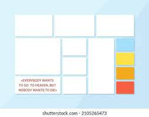
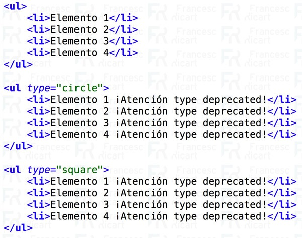

Flex Box

Segun el autor Chris coyier 2013, Expresa que los flexbox son como un módulo completo y no una sola propiedad, implica muchas cosas, incluido su conjunto completo de propiedades. Algunos de ellos están destinados a establecerse en el contenedor (elemento principal, conocido como "contenedor flexible"), mientras que otros están destinados a establecerse en los elementos secundarios (dichos "elementos flexibles") Chris Coyier on Apr 8, 2013.
mientras Enrique de la Torre expresa que no se trata de una simple propiedad de css, sino de un conjunto de ellas, que nos permitirán organizar, alinear y distribuir el espacio de los elementos en su elemento contenedor, incluso si no especificamos sus dimensiones o éstas son dinámicas. Esto nos facilita acomodarnos a diferentes tamaños de pantalla y diferentes dispositivos.(Enrique de la Torre, 7 abril 2015
Propiedades
Display: El atributo display, lo definimos un elemento como “caja flexible”, y también a todos sus hijos. Hay dos opciones para el elemento contenedor, definido como bloque o como elemento en línea.
ejemplo: display: flex | inline-flex;
Flex-flow: combina las propiedades flex-direction y flex-wrap para colocar los elementos flexibles. La primera nos permite establecer el eje principal, y por consecuencia la disposición de los items (hijos) en el contenedor padre y con la segunda especificamos como queremos que encajen los hijos, por defecto en una sola línea.
Ejemplo: flex-flow: <‘flex-direction’> || <‘flex-wrap’>
Justify-content: Define la alineación de los elementos hijo respecto al eje principal. Al principio del contenedor padre (a la izquierda), al final (a la derecha), en el centro, que se repartan equitativamente el espacio colocando el primer hijo al principio y el último al final (space-between) o que al contrario que el anterior, el espacio libre también se reparta también en los extremos (space-around)
Align-items: Define cómo los elementos flexibles se disponen a lo largo del eje transversal. Por orden, podemos colocar los elementos en la parte superior del elemento padre, en la parte inferior, centrado verticalmente, alineados según su alineación base o que ocupen todo el alto del contenedor padre (en el caso de que la dirección sea en forma de fila).
Align-content: Similar al anterior, pero alineando los elementos hijo con respecto al eje principal, es decir, cómo se distribuyen las filas de elementos en el contenedor padre, en consecuencia, sólo afecta si hay más de una fila de elementos
Listas HTML

Las listas en HTML pueden ser ordenadas, como aquellas que nos muestran los elementos de la lista en orden. Para representar el orden tendremos los elementos numerados los representamos mediante LI. Es decir, cada uno de los elementos irá precedido de un número o letra que establezca su orden. Sobre el atributo start nos permite indicar el número por el cual queremos que empiece la lista, ya que por defecto las listas ordenadas en HTML empiezan por el número 1. ejemplo: <0l start="numero"> ...
las listas desordenadas, nos sirven para mostrar los elementos sin ningún tipo de orden, simplemente precedidos por una viñeta que puede ser un punto, un cuadrado. Ejemplos